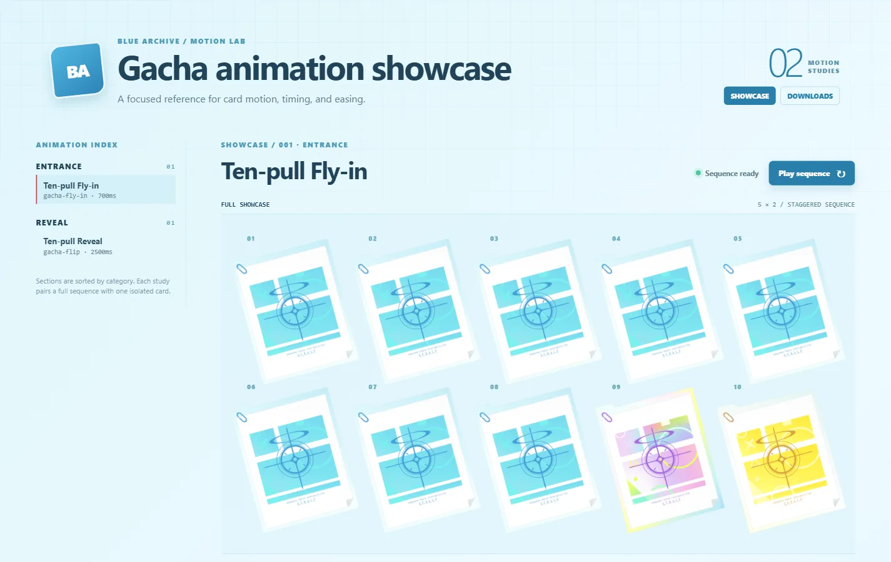
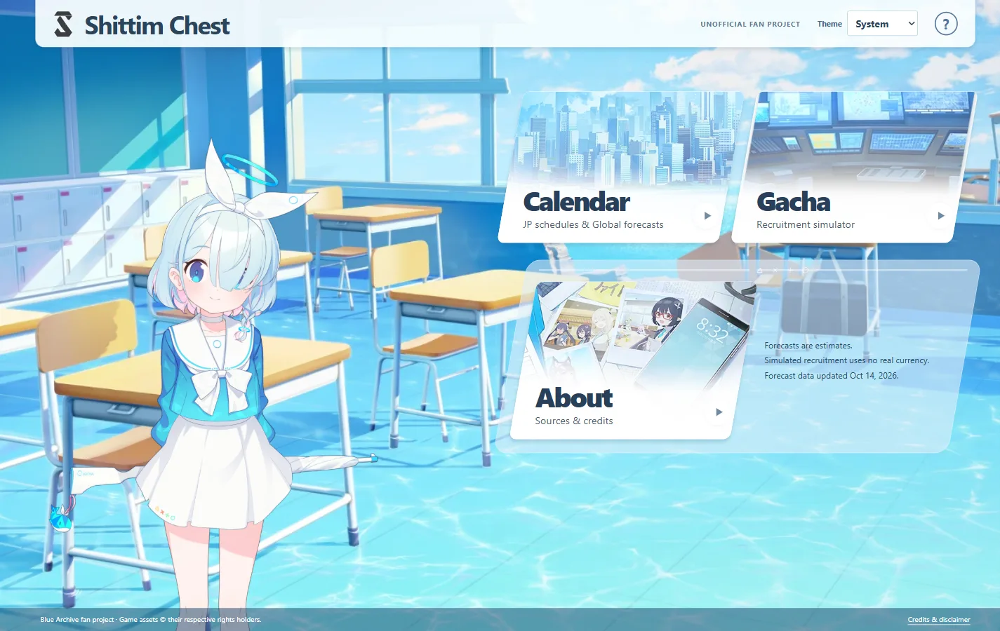
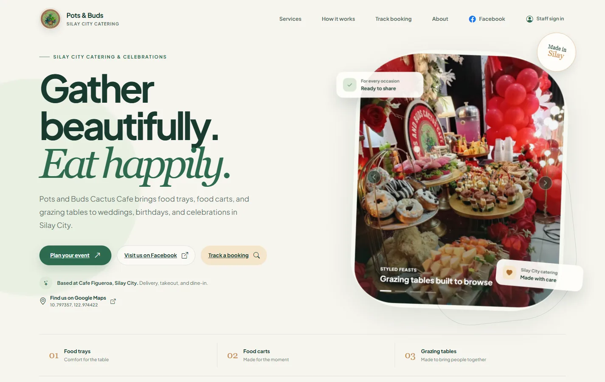

SELECTED WORK / 2022—2026
Gallery
A selection of original art, fanart, character studies, small web worlds, and visual experiments collected in one place.
LIVE / BUILT
Projects with a pulse.
Interfaces, tools, and playful experiments made for the browser. The source links below only point to public repositories.


Pots & Buds Cactus Cafe
A live Silay City catering experience. Main Developer; the CRMMDSS-RFM repository is private.
IMAGE / FORM / LIGHT
The work.
Browse by source folder or by authorship. Click an image to view it larger; compressed timelapses load only when you reach them.
Fujikura Uruka — Whispering Taxes
Fanart of Fujikura Uruka from Phase Connect. Channel
JTF Mob-chan — Blue Archive
Fanart of JTF Mob-chan from Blue Archive, with warm shadows and a sharp silhouette.
Botan Kamiina — Fully Blossoms When Drunk
Fanart of Botan Kamiina from Botan Kamiina Fully Blossoms When Drunk.
Mari — Feed / Blue Archive
Fanart of Mari from Blue Archive, with soft light, simple shapes, and a little appetite.
Minato Aqua — Graduation
Fanart of Minato Aqua from Hololive. Channel
Jirai Kei
Original art: graphic shapes with a soft center.
Plana — Background Study / Blue Archive
Fanart of Plana from Blue Archive, making an atmosphere do the talking.
Hikari — Headpat / Blue Archive
Fanart of Hikari from Blue Archive, rendered as a gentle study in pastel greens.
Kazusa — Kazoos / Blue Archive
Fanart of Kazusa from Blue Archive, with linework allowed to stay light.
Prune — Shupo / VTuber
Fanart for Prune: gesture and expression in a single frame. Channel
Prune — Birthday 2025 / VTuber
Fanart for Prune, made as a little birthday celebration. Channel
Shachimu — VTuber
Fanart of VTuber Shachimu: pink, quiet, and deliberately close. Channel
Frieren — Head Angle 01 / Anime
Fanart of Frieren from the anime Frieren, looking for the shape beneath the expression.
Frieren — Head Angle 02 / Anime
Fanart of Frieren from the anime Frieren: the same study, allowed to smile.
Nanashi Mumei — Moom / Hololive
Fanart of Nanashi Mumei from Hololive: character, companion, and a little green world. Channel
Doodle — 10.18.2025
Original art with a darker palette for a familiar face.
Kanoe — Rkgk / Blue Archive
Fanart of Kanoe from Blue Archive, kept loose and quick.
Kei — Skill Issue / Blue Archive
Fanart of Kei from Blue Archive: graphic lettering meets a tiny reaction.
Mono — Kurokuma / Anime
Fanart of Kurokuma from the anime Mono, in black and white with just enough gesture.
Manhattan Cafe — Sticker / Uma Musume
Fanart of Manhattan Cafe from Uma Musume, made as a sticker-sized character study.
Mejiro McQueen — Uma Musume
Fanart of Mejiro McQueen from Uma Musume, with sketchbook energy kept intentionally open.
Mutsuki — Blue Archive
Fanart of Mutsuki from Blue Archive: a quick line with a knowing smile.
Klownmi — Friend’s OC
Fanart of a friend’s original character, with soft edges and a face that does the work.
Prune — Drool / VTuber
Fanart for Prune: a tiny expression with a lot of personality. Channel
Swiss Roll — Original Study
Original food study, from first marks to the final sweet shape.
Lapwing — Rkgk / Trend Fanart
Fanart from the “Lapwing” trend, remembered from around a year ago.
Kaju — Makeine
Fanart of Kaju from the anime Makeine: Too Many Losing Heroines!.
OPEN SOURCE / PUBLIC
A few things I’ve built.
Selected public repositories from a wider collection of experiments, tools, and interface work.
blue-archive-gacha-showcase
CSSUnofficial Blue Archive gacha animation showcase and downloadable card assets.
shittim-chest
TypeScriptA standalone serverless Blue Archive gacha calendar for GitHub Pages.
naigi
TypeScriptA public TypeScript application project currently being developed.
aperglyph
TypeScriptA small TypeScript experiment exploring digital graphics and interaction.
Nijika-Clicker
JavaScriptA playful browser clicker made for the web, with a live GitHub Pages build.